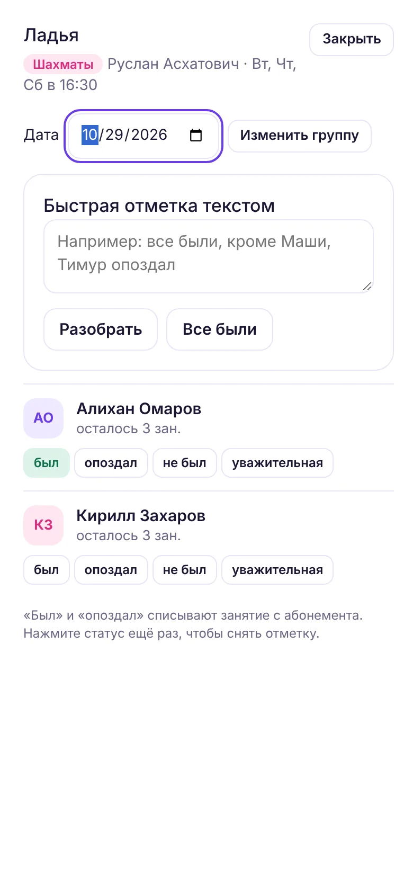
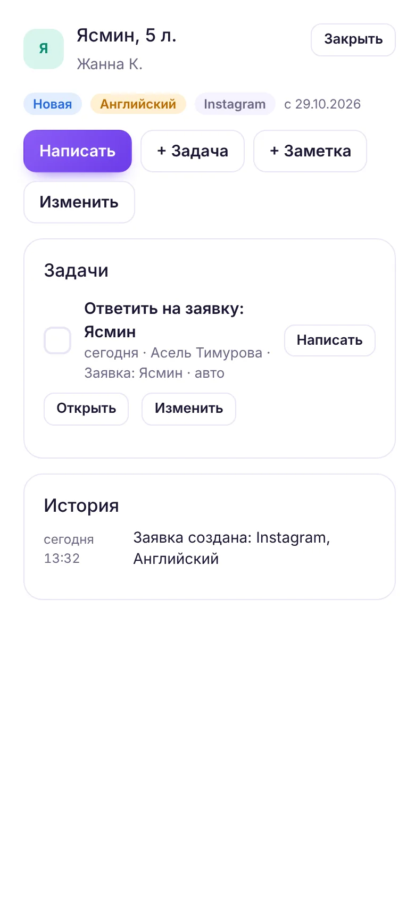
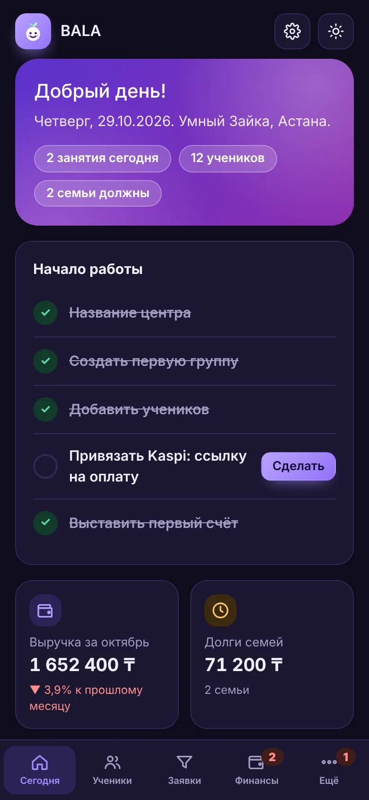
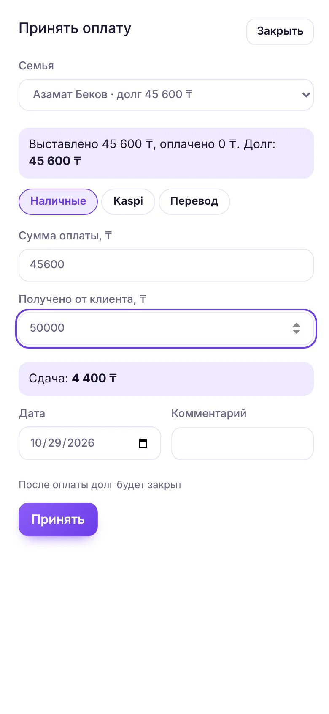
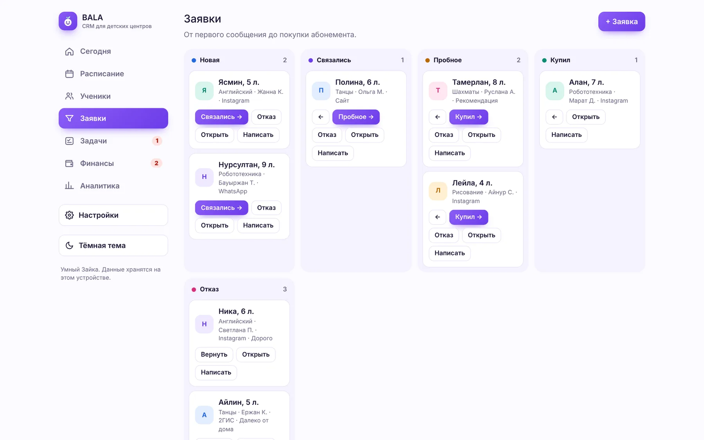
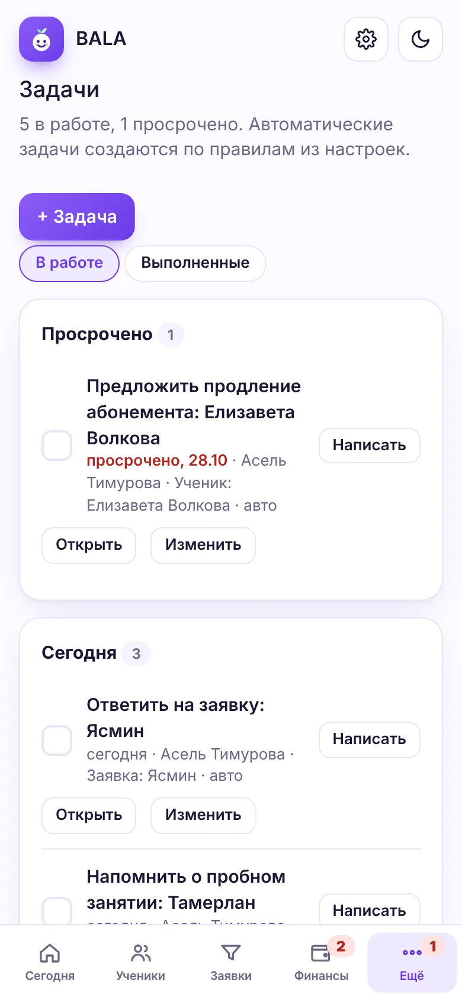
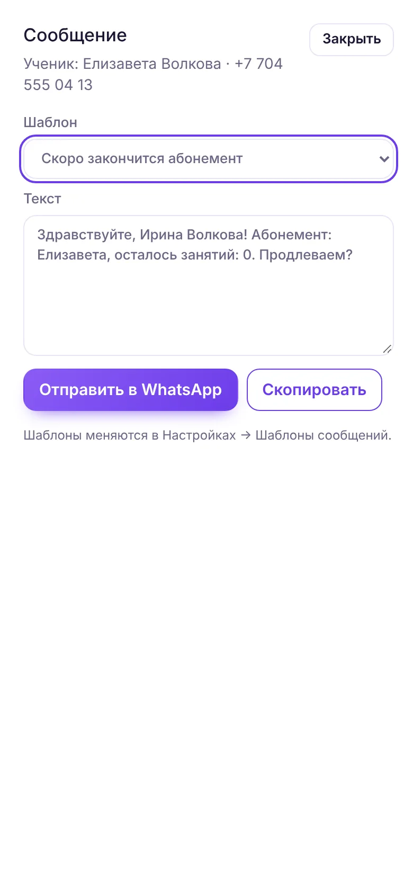
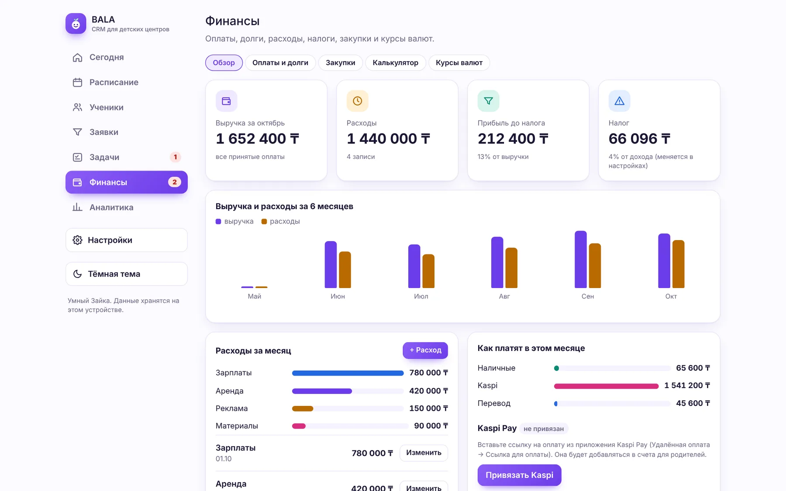
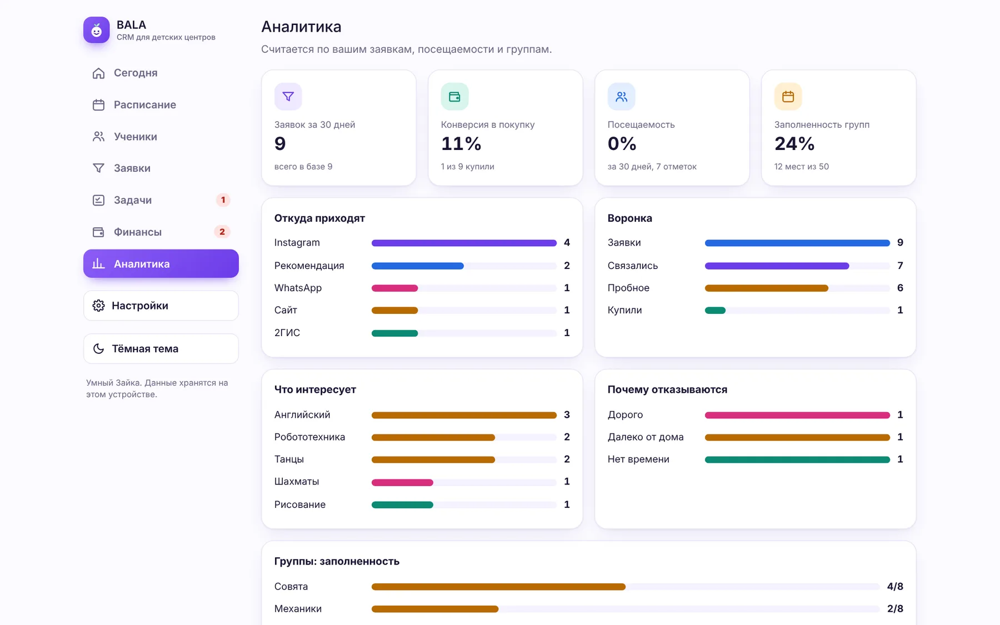

Каждая функция придумана для детского центра
Ниже всё, что умеет BALA CRM сегодня. Каждый пункт можно попробовать прямо сейчас в приложении, на своих данных или на демо-центре.
Отметить группу за минуту
Журнал открывается из расписания или с главного экрана. Отмечайте кнопками или текстом, приложение само поймёт имена, в том числе уменьшительные.
- Статусы: был, опоздал, не был, уважительная причина
- Быстрая отметка: «все были, кроме Маши, Тимур опоздал»
- «Был» и «опоздал» списывают занятие, повторное нажатие снимает отметку
- Можно отметить прошедшую дату, например перенос
- Группы с педагогом, кабинетом, возрастом, местами и своей ценой


Вся информация о ребёнке в одной карточке
Карточка ученика собирает остаток занятий, пропуски, семью и долг, задачи и историю всех событий.
- Семья с несколькими детьми и общим счётом
- Статусы: пробный, активный, пауза, ушёл
- Заметки: аллергии, кто забирает, пожелания родителей
- История: оплаты, счета, сообщения, заметки, этапы
- Риск ухода: пропуски, долг и конец абонемента


Kaspi, наличные и переводы без путаницы
Счёт считается сам, с семейной скидкой. Оплата может быть частичной, переплата уходит в следующий счёт. Когда счёт оплачен полностью, занятия добавляются детям автоматически.
- Счёт в WhatsApp с вашей ссылкой Kaspi
- Наличные: приложение считает сдачу
- Кто должен и сколько, напоминание одной кнопкой
- Касса за день: наличные и Kaspi отдельно
- Калькулятор абонемента со скидками


Воронка от первого сообщения до покупки
Заявки идут по этапам: новая, связались, пробное, купил или отказ. По ним строится аналитика, а «Купил» в одно нажатие превращает заявку в ученика.
- Источник: Instagram, WhatsApp, сайт, рекомендация, 2ГИС
- Причина отказа обязательна, чтобы видеть слабые места
- Карточка заявки с задачами, заметками и историей
- Автоматические задачи при смене этапа

Ничего не забыть, даже в загруженный день
Задачи ставятся вручную или по правилам. Каждая автоматическая задача знает, какой шаблон сообщения подходит, и открывает его одним нажатием.
- Сроки, ответственные, просроченные задачи
- Правила: новая заявка, этапы, пропуск, конец абонемента, счёт
- Задачи на главном экране и счётчик просроченных
- Свои правила и свои шаблоны


Сколько центр заработал на самом деле
Выручка считается по принятым оплатам, расходы вы вносите по категориям. Налог считается по вашей ставке, например 4% для упрощённой декларации ИП.
- Выручка, расходы, прибыль и налог за месяц
- График выручки и расходов за 6 месяцев
- Выгрузка оплат и расходов в Excel для бухгалтера
- Закупки: список товаров и динамика цен
- Курсы 48 валют Нацбанка РК каждый день, конвертер

Решения на основе цифр, а не ощущений
Аналитика строится из ваших заявок, посещений и групп. Сразу видно, какой канал приводит клиентов и где они отваливаются.
- Откуда приходят заявки
- Воронка и конверсия в покупку
- Почему отказываются
- Посещаемость за 30 дней
- Заполненность каждой группы

Что появится в облачной версии
Сервер облачной версии уже написан: работа командой и кабинет родителя готовы и ждут запуска на хостинге. Остальное зависит от договоров с сервисами.
Работа командой
готово, ждёт запуска сервераНесколько сотрудников и устройств с общими данными, роли и права доступа.
Кабинет родителя
готово, ждёт запуска сервераРасписание, остаток занятий, оплата и новости центра по ссылке, без установки.
Автоподтверждение Kaspi
в разработкеОплата отмечается сама. Зависит от доступа к API Kaspi, который ещё нужно получить.
WhatsApp Business API
в разработкеВходящие сообщения прямо в карточке клиента. Нужна верификация бизнеса в Meta.
Instagram и реклама
в разработкеОхваты, подписчики, стоимость заявки. Нужно одобрение приложения в Meta.
Филиалы
в разработкеНесколько центров в одном аккаунте и отчёты по всей сети.
Попробуйте BALA CRM на своём центре
Бесплатно, без регистрации и карты. Откройте приложение, введите название центра и добавьте первую группу.